Комплектующие устройства газобаллонного оборудования
Газовую топливную аппаратуру можно устанавливать на любой модели легковых автомобилей отечественного и иностранного производства, оснащенных карбюраторными двигателями или двигателями с системой впрыска топлива и электронным управлением, если конструкция позволяет разместить в багажнике цилиндрический или тороидальный баллон с газом.
Конструктивные решения комплектующих устройств газобаллонной аппаратуры (ГБА) отличаются большим разнообразием в зависимости от типов двигателей, для которых они предназначены, и от заводов-изготовителей, их производящих.
Газовое оборудование автомобиля размещают в трех местах: в моторном отсеке, салоне и багажном отсеке.
В моторном отсеке автомобиля устанавливают:
– редуктор-испаритель газа;
– смеситель;
– электромагнитный газовый клапан;
– электромагнитный бензиновый клапан.
В салоне на приборной панели устанавливают:
– переключатель видов топлива «Газ – Бензин» с блоком индикации режимов «Газ – Бензин» и количества топлива в газовом баллоне;
– предохранитель.
В багажном отсеке устанавливают:
– газовый баллон с запорно-предохранительной арматурой;
– выносное заправочное устройство.
Примечание. На некоторых моделях систем газобаллонной аппаратуры устанавливают дозирующее устройство, предназначенное для подачи определенного количества газа, соответствующего режиму работы двигателя, кроме холостого хода, а также вилку-тройник с регулирующим винтом (или винтами).
ГАЗОВЫЙ БАЛЛОН – стальной резервуар, предназначенный для хранения сжиженного нефтяного газа при температуре от – 40° до + 45 °C. На легковом автомобиле он крепится в багажном отделении или в нише для запасного колеса, а на малотоннажных автомобилях – на раме. Газовый баллон имеет цилиндрическую или тороидальную форму (рис. 3). Различные объемы и геометрические размеры позволяют выбрать оптимальный вариант размещения баллона в багажнике автомобиля. Баллон снабжен вентиляционной коробкой с герметически закрывающейся крышкой. Под крышкой расположены заправочный и расходный вентили, шкала со стрелкой, показывающей уровень газа в баллоне, заправочная чашка (в конструкции «САГА-6» предусмотрен только один расходно-наполнительный вентиль, который всегда находится в открытом положении, датчик дистанционного контроля, определяющий количество газа в баллоне и выносная заправочная горловина).
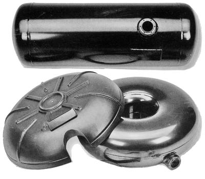
Рис. 3. Баллоны.
В некоторых конструкциях для заправки газового баллона необходимо:
– открыть крышку вентиляционной коробки;
– закрыть расходный вентиль;
– ввернуть в заправочную чашку переходник;
– подключить к переходнику заправочный пистолет;
– открыть заправочный вентиль на газовом баллоне;
– открыть кран заправочного пистолета.
После того, как баллон на 80–85 % заполнится газом (в баллоне срабатывает отсекающий клапан, при этом слышен характерный щелчок), указанные операции проделывают в обратном порядке (закрыть кран пистолета; закрыть заправочный вентиль на баллоне; снять пистолет, выкрутить переходник; открыть расходный вентиль; закрыть крышку вентиляционной коробки).
В дальнейшем, если автомобиль хранится вне закрытых помещений (уличное хранение), расходный вентиль можно не закрывать.
БЛОК ЗАПОРНО-КОНТРОЛЬНОЙ И ПРЕДОХРАНИТЕЛЬНОЙ АРМАТУРЫ (рис. 4) устанавливают на унифицированном фланце газового баллона с использованием прокладки, обеспечивающей герметичность соединения. Он является приемным устройством при заполнении баллона сжиженным нефтяным газом и обеспечивает подачу последнего в магистраль газопровода. Блок включает в себя входной штуцер и заправочный вентиль с обратным клапаном, расходный штуцер и расходные вентили жидкой и паровой фаз, ограничительный механизм уровня заправки баллона (мультиклапан). Блок закрыт герметичным кожухом, надежно отделяющим его содержимое от внутреннего объема автомобиля. Вентиляция внутреннего пространства кожуха осуществляется через дренажную трубку, выведенную за пределы кузова автомобиля.
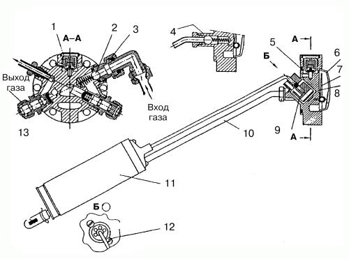
Рис. 4. Блок запорно-контрольной и предохранительной арматуры: 1 – предохранительный клапан; 2 – шарик; 3 – заправочный вентиль; 4 – скоростной клапан; 5 – прокладка; 6 – прозрачная крышка; 7 – контрольная стрелка; 8 – шкала; 9 – автоматический клапан; 10 – трубка забора газа; 11 – поплавок; 12 – регулировочный винт; 13 – расходный вентиль.
Сжиженным газом баллон заправляют через заправочный вентиль (3). Газ поступает в баллон, преодолевая усилия шарика (2), находящегося под действием пружины.
Баллон наполняется газом, и поплавок (11) поднимается. Автоматический клапан (9) отсекает поступление газа в баллон. Шарик (2) перекрывает обратный выход газа из баллона. Из баллона газ поступает в магистраль по трубке забора газа (10), отжимая шарик скоростного клапана (4) через расходный вентиль (13).
В обычных условиях работы расходный и заправочный вентили находятся в открытом положении. Их закрывают при постановке автомобиля на длительную стоянку, в случае утечки газа, а также при неисправностях, техническом обслуживании и ремонте газовой аппаратуры.
В случае нагрева баллона свыше 45 °C открывается предохранительный клапан (1), чтобы понизить давление газа. Контрольная стрелка (7) по шкале (8) указывает количество газа в баллоне. Указатель уровня топлива может выводиться на переключатель вида топлива в салон автомобиля. Стрелка приводится в действие магнитом, вмонтированным в мультиклапан (9). Она вместе со шкалой защищена прозрачной крышкой (6). Максимально допустимый объем заправляемого газа предварительно устанавливается винтами (12).
Оригинальные конструктивные решения блока запорно-контрольной и предохранительной арматуры, повышающие его надежность, применила научно-производственная фирма «САГА».
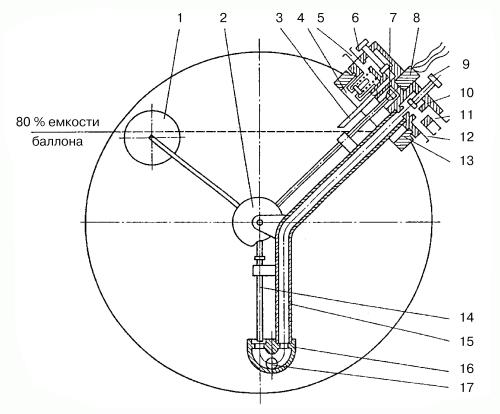
Рис. 5. Блок запорно-контрольной и предохранительной арматуры «САГА-6»: 1 – поплавок; 2 – кулачок; 3 – трубка; 4 – предохранительный клапан; 5 – дренажный штуцер; 6 – дренажный вентиль; 7 – шток с магнитом; 8 – датчик уровня газа; 9 – расходно-заправочный вентиль; 10 – корпус блока арматуры; 11 – заправочный штуцер; 12 – выходной штуцер; 13 – фланец газового баллона; 14 – шток рабочего клапана; 15 – трубопровод; 16 – корпус рабочего и ограничительного клапанов; 17 – шарик клапана.
Баллон оборудован унифицированной расходно-наполнительной и контрольно-предохранительной арматурой (рис. 5), которая включает в себя следующие элементы:
– заправочно-расходный блок с одним вентилем (9);
– датчик (8) уровня газа в баллоне;
– автоматическое устройство, ограничивающее наполнение баллона до 80 % его объема. Оно снабжено поплавком (1), штоком (14) рабочего клапана, кулачком (2). Запорный элемент устройства, находящийся в корпусе (16) рабочего и ограничительного клапанов, обеспечивает в закрытом состоянии скорость наполнения не выше 1 л/мин;
– устройство, позволяющее стравливать (выпускать) из баллона паровую фазу газа. Конец трубки (3) находится на уровне 80 % объема баллона. Газ выходит через дренажный штуцер (5) при открытии дренажного вентиля (6);
– предохранительный клапан (4), настроенный на давление 2,5 МПа и установленный в зоне, где часть топлива находится в газообразном состоянии;
– рабочий (запорный) и ограничительный клапаны в корпусе (16). Первый предназначен для прекращения заправки газом при достижении 80 % объема баллона, второй – для ограничения потока газа, проходящего через выходное или входное отверстия мультиклапана. Ограничительный клапан прекращает подачу газа из баллона, если его расход превышает максимальную величину (при обрыве магистрального трубопровода), которая определяется величиной перепада давлений не более 0,1 МПа.
Блок (10) арматуры выполнен с защитным газонепроницаемым вентилируемым кожухом. Он крепится на фланце (13) газового баллона.
Принципиальная особенность блока арматуры состоит в том, что, благодаря наличию в нем дренажного вентиля (6), он позволяет производить дозаправку баллона сжиженным газом при пониженном давлении заправки на заправочных станциях, не имеющих компрессора. Для этого необходимо снять колпак с вентиляционного кожуха, надеть на дренажный штуцер (5) шланг и вывести его за борт автомобиля. Затем следует открыть дренажный (6) и расходно-заправочный (9) вентили и начать заправку баллона газом.
ВЫНОСНОЕ ЗАПРАВОЧНОЕ УСТРОЙСТВО (рис. 6), предназначенное для заправки ГСН, крепится на кронштейне (7) гайкой (8) под задним бампером легкового автомобиля. Оно подсоединяется к заправочному трубопроводу через штуцер (10). Заправочный пистолет газовой колонки присоединяется к корпусу (3) с уплотняющей резиновой прокладкой (2). Газ, поступающий под давлением, открывает клапан (6) и заполняет газовый баллон. После окончания заправки клапан герметично закрывается.
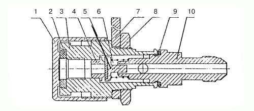
Рис. 6. Выносное заправочное устройство: 1 – пробка; 2 – прокладка резиновая; 3 – корпус; 4 – седло клапана; 5 – клапан; 6 – пружина; 7 – кронштейн; 8 – гайка; 9 – кольцо уплотнительное; 10 – штуцер выходной.
ГАЗОПРОВОД И СОЕДИНИТЕЛЬНЫЕ ЭЛЕМЕНТЫ. Газопровод проходи под полом автомобиля вдали от выхлопных труб. От соприкосновения с деталями кузова он защищен хлорвиниловыми или резиновыми трубками. Трубопроводы закрепляют на кузове автомобиля специальными скобами при помощи саморезов с интервалом не более 800 мм.
Газопровод высокого давления на всем протяжении от баллона до электромагнитного клапана газа и от него до редуктора-испарителя выполнен из меди или из нержавеющей стали с заводской развальцовкой (рис. 7). Если газопровод изготовлен из стали, то его присоединение к узлам аппаратуры осуществляется при помощи упорной накидной гайки. Такое соединение допускает многократную разборку, но при затяжке необходимо избегать чрезмерных усилий во избежание отрыва донышка накидной гайки.
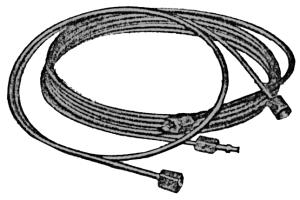
Рис. 7. Трубопроводы из нержавеющей стали.
На концах трубопровода предусматривают компенсационные кольца. Трубку изгибают с образованием кольца диаметром 50–80 мм, что предохраняет трубопровод от поломки под действием вибрации.
Герметичность газопровода высокого давления (рис. 8) обеспечивает ниппельное соединение типа конусная муфта. Такое соединение включает в себя трубопровод (3), конусную муфту (1), упорную гайку (2) и присоединяемую деталь (штуцер). Герметичность достигается за счет конусной муфты (1), изготавливаемой из латуни. Такое соединение допускает многократную разборку с заменой конусной муфты новой. Муфта должна плотно сидеть на трубке на расстоянии 2–3 мм от ее торца.
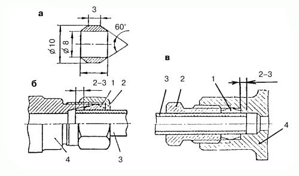
Рис. 8. Беспрокладочные соединения трубопроводов с помощью конусной муфты: а – конусная муфта; б, в – соединение трубопровода; 1 – конусная муфта (ниппель); 2 – гайка; 3 – трубка; 4 – присоединяемая деталь (штуцер).
В трубопроводах низкого давления для соединения газового редуктора со смесителем используют резиновые шланги из бензомаслостойкой резины. Шланговые соединения на штуцерах крепятся винтовыми хомутами типа «Норма».
КЛАПАНЫ БЕНЗИНОВЫЕ И ГАЗОВЫЕ (рис. 9, 10, 11) устанавливают с целью исполнения команд, которые управляют подачей бензина или газа в системах питания автомобилей, оборудованных газобаллонной аппаратурой. В отдельных случаях клапаны конструктивно объединяют с фильтрами, которые очищают поступающее в систему топливо.
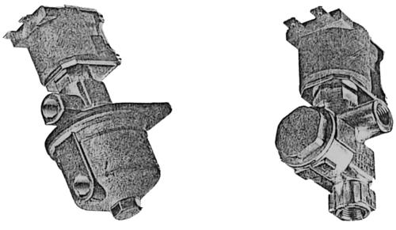
Рис. 9. Электромагнитные газовые клапаны. Внешний вид.
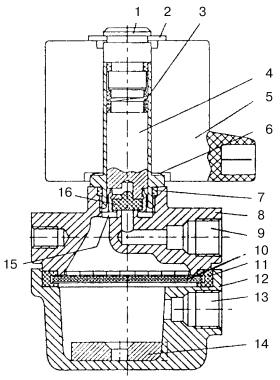
Рис. 10. Электромагнитный газовый клапан: 1 – направляющая втулка; 2, 6 – стопорное кольцо; 3 – пружина; 4 – якорь; 5 – катушка; 7 – уплотнитель; 8 – корпус; 9 – входной канал; 10 – металлическая обойма с фильтром; 11 – резиновое кольцо; 12 – отстойник; 13 – выходной канал; 14 – постоянный кольцевой магнит; 15 – кольцевая полость; 16 – уплотнитель.
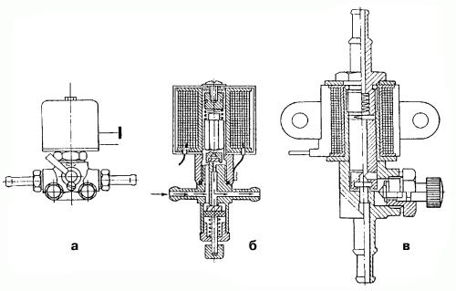
Рис. 11. Электромагнитные бензиновые клапаны: а – с ручкой; б – с нижним вентилем; в – с боковым вентилем.
Электромагнитный газовый клапан служит для открытия канала подачи газа в редуктор и его перекрытия при работе на бензине (управляется дистанционно из салона автомобиля посредством переключателя «Газ» – «Бензин»). Фильтры не требуют регулярного обслуживания: достаточно промывки или замены. В некоторых конструкциях очищать фильтры следует каждые 30 000 км пробега автомобиля.
При включенном зажигании и установке переключателя в положение «Газ» клапан открывается, и газ по трубопроводу высокого давления поступает в редуктор-испаритель. При включенном зажигании клапан находится в положении «Закрыт».
Электромагнитный бензиновый клапан служит для открытия (закрытия) канала подачи бензина в карбюратор, одновременно перекрывается подача газа. В нижней части клапана предусмотрен винт (кран) для механического (ручного) открывания клапана. В случае выхода из строя электронного блока управления газовым оборудованием этот винт следует ввернуть в клапан (или повернуть кран), чтобы можно было продолжить движение.
Электромагнитный бензиновый клапан «САГА-6» с фильтром устанавливают между бензонасосом и карбюратором.
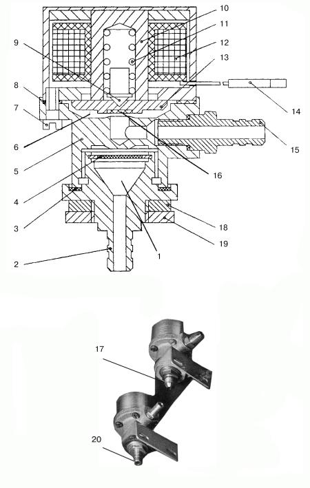
Рис. 12. Электромагнитный клапан «САГА-6»: 1 – входная полость; 2, 20 – штуцер; 3, 8 – уплотнительные прокладки; 4 – фильтр; 5 – корпус; 6 – выходная полость; 7 – винт крепления; 9 – центрирующий толкатель; 10 – корпус электромагнита; 11 – пружина; 12 – катушка электромагнита; 13 – запорная шайба; 14 – вывод обмотки катушки электромагнита; 15 – выходной штуцер; 16 – уплотнитель; 17 – газовый штуцер; 18 – кронштейн крепления; 19 – гайка.
Клапан (рис. 12) щелевого типа имеет корпус (5) с входной полостью (1), размещенной во входном штуцере (2), и выходной полостью (6) с седлом (16) и выходным штуцером (15). В корпусе (10) электромагнита находится катушка (12). Электрическая проводка (14) связывает катушку электромагнита клапана с электронной схемой управления газовой аппаратуры. Запорный якорь электромагнита образован запорной шайбой (13) с уплотнителем (16) и центрирующим толкателем (9), нагруженным пружиной (11). Корпус (5) герметично скреплен с корпусом (10) электромагнита с помощью винтов (7). Герметичность корпуса (5) со штуцером (2) и корпусом (10) обеспечивается с помощью уплотнителей (3) и (8) соответственно.
Входная и выходная полости (1) и (6) сообщаются через соединительные каналы.
Клапаны в газовой магистрали отличаются от клапанов, установленных в бензопроводе, только конструкцией входного и выходного штуцеров, предназначенных для присоединения металлических трубок подвода газа (см. поз. 3 и 8 на рис. 13).
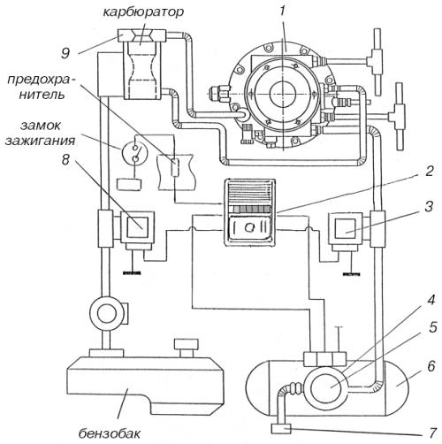
Рис. 13. Схема соединения газовой аппаратуры «САГА-6»: 1 – редуктор-испаритель; 2 – переключатель вида топлива и указатель уровня газа в баллоне; 3 – газовый электромагнитный клапан; 4 – газонепроницаемый кожух; 5 – блок запорно-предохранительной арматуры; 6 – газовый баллон; 7 – выносная заправочная горловина; 8 – бензиновый электромагнитный клапан; 9 – газосмесительное устройство.
Электромагнитный клапан прерывания или возобновления подачи газа или бензина имеет повышенную надежность, потребляет мало тока (не более 0,7 А) и срабатывает при низком напряжении, мощность катушки электромагнита составляет 4 Вт. Фильтр клапана не требует регулярного обслуживания (промывки или замены).
Газовым фильтром может служить постоянный магнит (рис. 10), установленный на входе в электромагнитный газовый клапан. Этот клапан имеет корпус (8) и отстойник (12). Внутри отстойника (15) расположен фильтрующий элемент из технической замши, заключенный в металлическую обойму (10), которая уплотнена резиновым кольцом (11). Постоянный кольцевой магнит (14) прикреплен к днищу отстойника. Фильтр имеет входной (13) и выходной (9) штуцеры. Уплотнитель выполнен из бензо-маслостойкой резины. Для очистки отстойника его снимают с основания (8) и чистят фильтрующий элемент. Клапан имеет уплотнитель (7), направляющую втулку (1) со стопорными кольцами (2) и (6), пружину (3), якорь (4) и катушку (5) с клеммой.
Сжиженный нефтяной газ через штуцер (13) подается в полость (15) отстойника, проходит фильтр (10), поступает в кольцевую полость (16) и через зазор между приподнятым уплотнителем и седлом поступает в выходной штуцер (9), а из клапана – непосредственно в редуктор-испаритель.
Газовые электромагнитные клапаны (рис. 9) с фильтром управляются от переключателя вида топлива. Они предназначены для перекрытия подачи газа при работе двигателя на бензине, перекрытия подачи газа при выключенном зажигании и для фильтрации газа.
Электромагнитный бензиновый клапан (рис. 11) отключает подачу бензина при работе двигателя на газе.
Устанавливать электромагнитный бензиновый клапан следует в таком месте, чтобы отрезок бензопровода между ним и бензонасосом был как можно короче. Дело в том, что при работе на бензине на этом участке сохраняется постоянный уровень бензина, поддерживаемый бензонасосом. Бензин может сильно нагреваться, вызывая нежелательное повышение давления в шланге. И чем он короче, тем более безопасен. По той же причине необходимо особое внимание уделять надежной герметизации соединений между бензонасосом и электромагнитным бензиновым клапаном.
Клапан всегда закрыт. Он служит для дистанционного управления подачи топлива. На корпусе клапана есть ручной привод в виде ручки или вентиля. Ручным управлением пользуются во время подкачки бензонасосом бензина в карбюратор: в холодное время года, после длительной стоянки автомобиля и в случае отказа электромагнита. При этом ручку или вентиль переводят в положение «Открыто». После подкачки бензина ручку или вентиль ставят в положение «Закрыто» – это их постоянное положение, а переключатель вида топлива в салоне в положение «Бензин». Если этого не сделать, то двигатель будет одновременно работать и на бензине, и на газе. В этом случае не поможет даже отключение дистанционного переключателя вида топлива, а это недопустимо!
РЕДУКТОР-ИСПАРИТЕЛЬ предназначен для превращения жидкой фазы газа в паровую и подачи паровой фазы в смеситель.
Обслуживание. Через каждые 1500–2000 км пробега (на горячем двигателе) следует отвернуть пробку (винт), находящуюся в нижней части редуктора, и слить конденсат (маслянистый отстой).
Редукторы-испарители играют важную роль в работе газобаллонного оборудования, поэтому им следует уделить особое внимание.